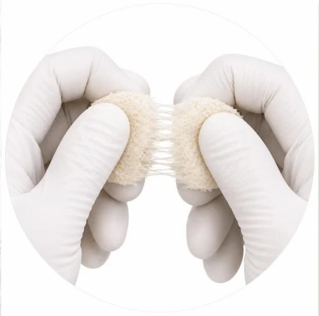
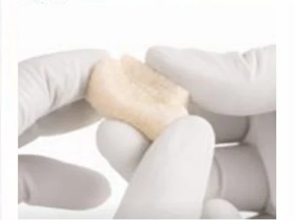
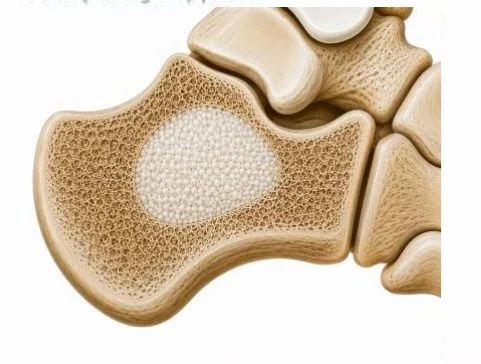
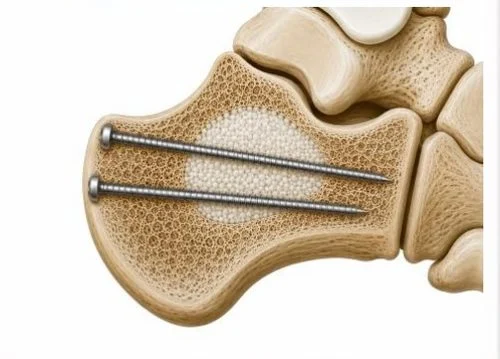
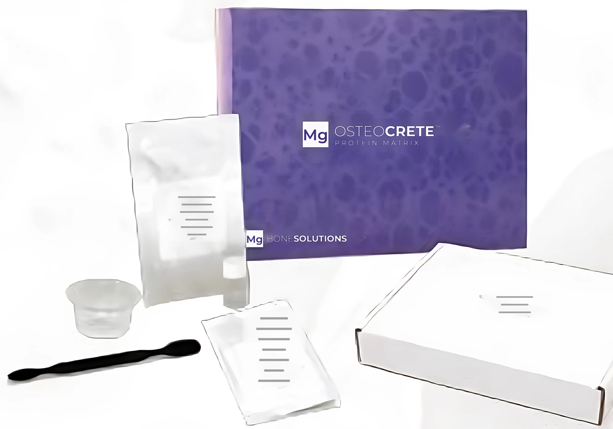

Bone's own proteins.
Locked in magnesium.
Demineralized allograft fibers carry the protein frame of living bone. A magnesium phosphate crystal phase forms around them and sets in place. The result is one graft that holds its shape, signals bone formation and remodels into the patient's own bone.
Bone is a protein frame
filled with mineral.
By weight, bone is roughly two parts mineral to one part protein. Nearly all of that protein is type I collagen, woven into fibers that give bone its toughness. Bound inside the collagen sit the signaling proteins that tell the body to make new bone.

Every graft does three jobs.
This one is built for each.
Osteoconductive
A surface for cells and vessels to attach and grow across. The magnesium phosphate crystals and the collagen fibers both provide it.
Magnesium phase + fibersOsteoinductive potential
Proteins that recruit stem cells and steer them toward bone. They come from the allograft fibers, lot-tested after sterilization.*
Allograft fibersOsteogenic
Living bone-forming cells. They come from the patient: marrow, blood and the surrounding bone move into the graft as it is replaced.
The patient's own biologyMagnesium adds a fourth element: the mineral itself is biologically active. Its ions take part in the signaling that bone healing runs on.
An acid-base reaction
that crystallizes in place.
Simplified reaction for the Mg OSTEO material: potassium phosphate and magnesium oxide crystallize into magnesium potassium phosphate.2
60% of the body's magnesium
lives in bone.
Magnesium helps regulate calcium and the mineralization of bone. As the graft dissolves, it releases Mg2+ ions into the healing zone, where preclinical research shows they act on every stage of repair.
Stem cells
Magnesium ions increase proliferation of marrow stromal cells and enhance their osteogenic activity.3
Blood supply
Raised magnesium increases VEGF and HIF expression, the signals that drive new vessels into the defect.3
Nerve signaling
Implant-derived magnesium raised local CGRP from sensory nerves, activating periosteal stem cells and improving fracture healing in rats.4
Mineralization
Magnesium improves osteoblast attachment and growth and promotes apatite formation on scaffolds.5
Resorbed from the edges.
Replaced with bone.
Creeping substitution: osteoclasts resorb the graft at its surface while osteoblasts lay new bone right behind them. The magnesium phase is designed to resorb at a pace bone can keep up with, neither gone too soon nor left behind for years.
Timing varies by patient, site and defect size.
Measured in patients.
Proven at the bench.
Data from the Mg OSTEO magnesium technology that forms the base of the Protein Matrix. Animal data may not predict human clinical performance.
Every void filler
makes a trade.
Protein Matrix
Allograft proteins for biology, magnesium for bone chemistry, and a scaffold that sets in place: osteoinductive signaling without rapid collapse or washout, then remodeling into bone.
Mold it. Set it. Drill it.



Voids across the skeleton.
Fixation carries the load.
Indicated for bony voids or defects of the extremities, pelvis and spine that are not intrinsic to the stability of the bony structure. In the posterolateral spine and with interbody devices it is used with morselized autograft at 1:1 by volume. Set graft is a temporary support medium; rigid fixation carries the load.
Everything in one box.

- Mg powder
- Solution
- Inductive allograft bone fibers
- Basin
- Spatula
Sterile and single use. Store at room temperature.
Healing sooner.
Wellness longer.
Lotus Medical brings Mg OSTEOCRETE Protein Matrix to surgeons across Northeast Ohio, in collaboration with the clinician for advanced patient care.
Mg OSTEOCRETE Protein Matrix is manufactured by Bone Solutions, Inc. *Each lot of the allograft bone fibers is tested for osteoinductive potential after sterilization in an athymic rat model; animal data may not predict human clinical performance. Mg OSTEOCRETE Protein Matrix is a bone void filler for voids and defects that are not intrinsic to the stability of the bony structure and is not intended to provide structural support during the healing process. Do not use in infected sites. Refer to the instructions for use (10260 Rev A) for indications, contraindications and warnings. Animations are illustrations, not to scale.
References: 1. Urist MR. Bone: formation by autoinduction. Science. 1965;150:893-899. 2. Bone Solutions, Inc. Mg OSTEO technologies: in vivo, in vitro and retrospective studies (product information); 510(k) preclinical bone void study, data on file. 3. Yoshizawa S, et al. Magnesium ion stimulation of bone marrow stromal cells enhances osteogenic activity. Acta Biomater. 2014;10(6):2834-2842. 4. Zhang Y, et al. Implant-derived magnesium induces local neuronal production of CGRP to improve bone-fracture healing in rats. Nat Med. 2016;22(10):1160-1169. 5. Wong HM, et al. Engineered polycaprolactone-magnesium hybrid biodegradable porous scaffold for bone tissue engineering. Prog Nat Sci Mater Int. 2014;24:561-567. 6. Magister S, Kolaczko J, Sattar A, Wetzel RJ. Clinical parameters and radiographic resorption of a novel magnesium based bone void filler. Injury. 2022;53(3):947-952.